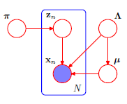

Variational Mixture of Gaussians¶
Gaussian mixture models are widely used to model complex intractable probability distributions using a mixture of Gaussians. In a previous post, GMMs were discussed together with a Maximum Likelihood approach to fit a GMM to the Palmer Penguins dataset using the EM algorithm.
Here we descrive the variational inference algorithm to the same dataset. The following plate model is assumed for the variational approximation. The following plate model in Fig 10.5 from [1] is assumed.

The variational approach resolves many of the limitations of the MLE approach.
Variational approach uses a Bayesian model that enables determining parameter uncertainty
Prevents over-fitting of data to model
The cardinality/dimensionality of the latent variable can be determined or inferred by the algorithm.
Theory¶
Given a dataset for random variable \(x\), we introduce a \(K\) dimensional binary random variable \(z\) having a 1-of-\(K\) representation in which a particular element \(z_k = 1\) with \(z_i = 0 \text{ } \forall i\ne k\) i.e., \(\sum{z_k} = 1\). Assume the dataset has \(N\) points. The dataset of observed and latent variables are denoted by \(X\) and \(Z\) respectively.
The marginal distribution \(p(Z,X)\) is defined as \( p(Z,X) = p(X|Z)\cdot p(Z)\).
If \(p(z_k = 1) = \pi_k\) and \(p(x|z_k=1) = \mathcal{N}(x|\mu_k,\Lambda_k^{-1})\) then, $\(\begin{align} p(Z) &= \prod_{n=1}^N \prod_{k=1}^K \pi_k^{z_{nk}} \\ p(X|Z) &= \prod_{n=1}^N \prod_{k=1}^K \Bigg(\mathcal{N}(x|\mu_k,\Lambda_k^{-1})\Bigg)^{z_{nk}} \end{align}\)$
The marginal distribution of \(X\) is therefore,
We now consider a variational distribution that factorizes the latent variables and parameters as:
Conjugate Priors¶
We introduce conjugate priors for \(\pi\),\(\mu\),\(\Lambda\) as follows.
For \(\pi\) we choose a Dirichlet prior with the same parameter \(\alpha_0\) for each component. $\( p(\pi) = \text{Dir}(\pi|\alpha_0) = C(\alpha_0)\prod_{k=1}^K{\pi_k^{\alpha_0-1}}\)\( where \)C(\alpha_0)$ is the normalization constant.
For \(\mu\) and \(\Lambda\), a Gaussian-Wishart prior is chosen for the mean and precision of each component. $\( \begin{align} p(\mu,\Lambda) &= p(\mu|\Lambda) p(\Lambda) \\ &= \prod_{k=1}^K\mathcal{N}\Big(\mu_k|m_0,(\beta_0\Lambda_k)^{-1})\Big) \mathcal{W}(\Lambda_k|W_0,\nu_0) \end{align}\)$
Optimal factor for \(q(Z)\)¶
The update equation for the latent variable is given by, $\( \begin{align} \ln{q^*(Z)} &= \mathbb{E}_{\pi,\mu,\Lambda}\Big[ \ln{p(X,Z,\pi,\mu,\Lambda}\Big] \\ &= \mathbb{E}_{\pi,\mu,\Lambda}\Big[\ln\Big\{p(X|Z,\mu,\Lambda) p(Z|\pi) p(\pi) p(\mu|\Lambda) p(\Lambda) \Big\}\Big]\end{align}\)$
By combining the terms not including \(Z\) in the above expression into a constant term, $\( \begin{align} \ln{q^*(Z)} &= \mathbb{E}_{\pi}\Big[\ln p(Z|\pi)\Big] + \mathbb{E}_{\mu,\Lambda}\Big[\ln{p(X|Z,\pi,\mu)}\Big] + \text{const.}\end{align}\)$
Substituting the above 2 expressions above,
where \(\rho_{nk}\) is given by, $\( \rho_{nk} = \mathbb{E}\Big[\pi_k\Big] + \frac{1}{2}\mathbb{E}\Big[\ln{|\Lambda_k|}\Big] - \frac{D}{2}\ln(2\pi) - \frac{1}{2}\mathbb{E}\Big[(x_n-\mu_k)^T \Lambda_k (x_n-\mu_k)\Big]\)$
The distribution \(q^*(Z)\) is given by,
where \(r_{nk}\) are the responsibilities with $\( r_{nk} = \frac{\rho_{nk}}{\sum_{j=1}^K\rho_{nj}}\)$
For the discrete distribution \(q^*(Z)\), we have \(\mathbb{E}\Big[q(z_{nk})\Big] = r_{nk}\)
The following provide expressions for the terms in the above expression for \(\rho_{nk}\). $\(\begin{align} \mathbb{E}\Big[(x_n-\mu_k)^T \Lambda_k (x_n-\mu_k)\Big] &= D \beta_k^{-1} + \nu_k \mathbb{E}\Big[(x_n-m_k)^T W_k (x_n-m_k)\Big] \\ \mathbb{E}\Big[\ln{|\Lambda_k|}\Big] &= \sum_{i=1}^D \psi\Bigg( \frac{\nu_k+1-i}{2}\Bigg) + D \ln 2 + \ln |W_k| \\ \mathbb{E}\Big[\pi_k\Big] &= \psi(\alpha_k) - \psi(\hat{\alpha}) \end{align}\)$
where \(\psi(\cdot)\) is the digamma function and \(\hat{\alpha} = \sum_k \alpha_k\).
Optimal factor for \(q(\pi,\mu,\Lambda)\)¶
Given the expression for \(q^*(Z)\) and \(r_{nk}\), the following quantities are defined.
Now the optimal factor \(q(\pi,\mu,\Lambda)\) is given by
The expression above factorizes into terms involving just \(\pi\) and \(\mu,\Lambda\) thereby implying independence of these variables. Note that this result is not based on any prior assumption but a direct result of the model.
Optimal factor for \(q(\pi)\)¶
The posterior \(q^*(\pi)\) is also a Dirichlet distribution with parameter \(\alpha_0+N_k\). i.e. \(q^*(\pi) = \text{Dir}(\pi|\alpha_0+N_k)\)
Optimal factor for \(q(\mu,\Lambda)\)¶
The derivation for the parameters of the posterior distribution for \(q(\mu,\Lambda)\) is very involved, so only the results are presented here. More details can be found in section 10.2.1. in [1].
Example¶
The palmer penguins dataset released by [2] and obtained from [3] is used as an example. Two features - Flipper Length & Culmen Length are used as the features to cluster the dataset. We set K = 6 and demonstrate that 3 of these components are redundant while correctly identifying the 3 correct categories of penguins - Adelie, Chinstrap and Gentoo. This same dataset was used in the GMM section. The dataset is plotted below. This is the same dataset used to demonstrate Gaussian Mixture Models using the EM algorithm.
import pandas as pd
import requests
import io
import numpy as np
from scipy.stats import multivariate_normal as gaussian
import matplotlib.pyplot as plt
import matplotlib.image as mpimg
from matplotlib.patches import Ellipse
import matplotlib.transforms as transforms
import matplotlib.colors as mcolors
from scipy.special import digamma
from scipy.stats import multivariate_normal as gaussian
from scipy.stats import wishart,dirichlet
from scipy.special import softmax as softmax
def getCSV(url):
download = requests.get(url).content
df = pd.read_csv(io.StringIO(download.decode('utf-8')))
return df
file = "https://raw.githubusercontent.com/mcnakhaee/palmerpenguins/master/palmerpenguins/data/penguins-raw.csv"
df = getCSV(file)
txt_labels = np.unique(df['Species'])
lbl = txt_labels[0]
fig,ax = plt.subplots(1,2,figsize=(10,5))
df_data = [None]*len(txt_labels)
img = mpimg.imread('../../img/lter_penguins.png')
ax[0].imshow(img)
ax[0].axis('off')
color = ['tomato','mediumorchid','seagreen','aqua','black','magenta']
for i,lbl in enumerate(txt_labels):
df_data[i] = df[df['Species'] == lbl]
# print(df_data[i].columns)
ax[1].scatter(df_data[i]['Flipper Length (mm)'],df_data[i]['Culmen Length (mm)'],color=color[i])
# ax[1].axis('off')
ax[1].set_xlabel('Flipper Length');
ax[1].set_ylabel('Culmen Length');
## Number of classes
K = 10
flp_len = np.mean(df['Flipper Length (mm)'])
clm_len = np.mean(df['Culmen Length (mm)'])
df = df[df['Flipper Length (mm)'].notna()]
df = df[df['Culmen Length (mm)'].notna()]
data = np.matrix(np.c_[df['Flipper Length (mm)'],df['Culmen Length (mm)']].T)
# print(data)
x_mean = np.array([[flp_len],[clm_len]])
d = data - np.reshape(x_mean,(2,1))
cov = np.matmul(d,d.T)/float(data.shape[1])
prec = np.linalg.inv(cov)#
## Init
pts = data.shape[1]
m_init = np.mean(data[:,:pts//K],axis=1)
prev = pts//K
for k in range(1,K):
m_init = np.c_[m_init,np.mean(data[:,prev+1:prev+1+(pts//K)],axis=1)]
prev = prev+1+(pts//K)
m_init = np.matrix(m_init)
print(m_init)
# m_init = data[:,-K:]
# m_init = data[:,10:10+K]
# m_init = data[:,:K]
# m_init = np.matrix(np.c_[data[:,0],data[:,200],data[:,-1]])
# m_init = data[:,:K]
# m_init = np.matrix(np.random.randn(2,K))
beta_init = np.array([1. for k in range(K)])
W_init = [prec for k in range(K)]
nu_init = np.array([2. for k in range(K)])
alpha_init = np.array([0.001 for k in range(K)])
[[186.35294118 188.55882353 191.85294118 192.88235294 206.82352941
215.82352941 219.58823529 214.38235294 194.38235294 197.51851852]
[ 38.64411765 38.92941176 38.51764706 39.44117647 43.96176471
46.76470588 48.07058824 48.46176471 48.84411765 48.88518519]]
## Variational Approximation
def getZ(X,m,beta,W,nu,alpha):
dig_alpha = digamma(np.sum(alpha))
D = X.shape[0]
N = X.shape[1]
rho = np.zeros((N,K))
r = np.zeros((N,K))
for k in range(K):
E_ln_pi_k = digamma(alpha[k]) - dig_alpha
E_ln_sig_k = float(D)*np.log(2) + np.log(np.linalg.det(W[k]))
for i in range(1,D+1):
E_ln_sig_k = E_ln_sig_k + digamma(0.5*(nu[k]+1-i))
tmpSum = E_ln_pi_k + 0.5*E_ln_sig_k - 0.5*float(D)*np.log(2*np.pi)
for n in range(N):
dx = X[:,n] - m[:,k]
E_mu_sig = float(D)/beta[k] + nu[k]*np.matmul(dx.T,np.matmul(W[k],dx))
rho[n,k] = tmpSum - 0.5*E_mu_sig
for n in range(N):
rho[n,:] = softmax(rho[n,:])
return rho
def getHelperVariables(X,r):
Nk = np.sum(r,axis=0)
x = np.matrix(np.zeros((X.shape[0],K)))
for k in range(K):
if Nk[k] != 0:
for n in range(X.shape[1]):
x[:,k] = x[:,k] + r[n,k]/Nk[k]*X[:,n]
S = [0*np.eye(X.shape[0]) for k in range(K)]
for k in range(K):
if Nk[k] != 0:
for n in range(X.shape[1]):
dx = X[:,n]-x[:,k]
S[k] = S[k] + r[n,k]*np.matmul(dx,dx.T)/Nk[k]
return Nk,x,S
def getMu(m0,beta0,Nk,x):
beta = beta0+Nk
# m = (beta0*m0 + Nk*x)/beta
m = (np.multiply(beta_init,m_init) + np.multiply(Nk,x))/beta
return m,beta
def getPi(alpha0,Nk):
return alpha0+Nk
def getSigma(m0,beta0,W0_inv,nu0,Nk,x,S):
nu = nu0+Nk
Wk = [0*np.eye(2) for k in range(K)]
for k in range(K):
dx = x[:,k]-m0[:,k]
Wk_inv = W0_inv[k] + Nk[k]*S[k] + beta0[k]*Nk[k]/(beta0[k]+Nk[k])*np.matmul(dx,dx.T)
Wk[k] = np.linalg.inv(Wk_inv)
return Wk,nu
def getLogLikelihood(X,r,Nk,x,S,m,beta,W,nu,alpha):
pi = Nk/float(X.shape[1])
logLikelihood = 0
eps = 1E-20*np.ones(pi.shape)
pi_new = np.maximum(pi,eps)
pi_new = pi_new/np.sum(pi_new)
logLikelihood = 0#dirichlet.logpdf(pi_new,alpha)
pi1 = np.array([])
alpha1 = np.array([])
for k in range(K):
if pi[k] == 0:
continue
pi1 = np.append(pi1,np.array([pi[k]]))
alpha1 = np.append(alpha1,np.array([alpha[k]]))
prec = np.linalg.inv(S[k])
cv_mat = S[k]/beta[k]
log_mu = np.log(gaussian.pdf(np.ravel(x[:,k]),mean=np.ravel(m[:,k]),cov=cv_mat))
log_sig = np.log(wishart.pdf(prec,df=nu[k],scale=W[k]))
logLikelihood = logLikelihood + log_mu + log_sig
for n in range(X.shape[1]):
prob = 0
for k in range(K):
# if np.linalg.det(S[k]) == 0:
if pi[k] == 0:
continue
prob = prob + pi[k]*gaussian.pdf(np.ravel(X[:,n]),mean=np.ravel(x[:,k]),cov=S[k])
logLikelihood = logLikelihood + np.log(prob)
logLikelihood = logLikelihood + dirichlet.logpdf(pi1,alpha1)#dirichlet.logpdf(pi_new,alpha)#
return logLikelihood
def VariationalGMM(X,m0,beta0,W0,nu0,alpha0,max_iter=500,tol=1E-6):
m1 = m0
beta1 = beta0
W1 = W0.copy()
nu1 = nu0
alpha1=alpha0
W0_inv = []
for k in range(K):
W0_inv += [np.linalg.inv(W0[k])]
c = 0
logLikelihood = []
while c < max_iter:
r = getZ(data,m1,beta1,W1,nu1,alpha1)
Nk,x,S = getHelperVariables(data,r)
m,beta = getMu(m0,beta0,Nk,x)
alpha = getPi(alpha0,Nk)
W,nu = getSigma(m0,beta0,W0_inv,nu0,Nk,x,S)
logLikelihood.append(getLogLikelihood(X,r,Nk,x,S,m,beta,W,nu,alpha))
# print(c,logLikelihood[-1],np.round(Nk,3))
max_diff = np.max(np.abs(beta-beta1))
max_diff = max(max_diff,np.max(np.abs(alpha-alpha1)))
max_diff = max(max_diff,np.max(np.abs(nu-nu1)))
max_diff = max(max_diff,np.max(np.abs(m-m1)))
for k in range(K):
max_diff = max(max_diff,np.max(np.abs(W[k]-W1[k])))
m1 = m
beta1 = beta
W1 = W.copy()
nu1 = nu
alpha1=alpha
if max_diff <= tol:
print("Algorithm converged after iteration:",c)
break
c = c+1
print("Final Log Likelihood:",logLikelihood[-1])
print("Effective cluster size:",np.round(Nk,3))
return m,beta,W,nu,alpha,logLikelihood
def confidence_ellipse(ax, mu, cov, n_std=3.0, facecolor='none', **kwargs):
"""
Create a plot of the covariance confidence ellipse of `x` and `y`
Parameters
----------
cov : Covariance matrix
Input data.
ax : matplotlib.axes.Axes
The axes object to draw the ellipse into.
n_std : float
The number of standard deviations to determine the ellipse's radiuses.
Returns
-------
matplotlib.patches.Ellipse
Other parameters
----------------
kwargs : `~matplotlib.patches.Patch` properties
"""
# if cov != cov.T:
# raise ValueError("Not a valid covariance matrix")
# cov = np.cov(x, y)
pearson = cov[0, 1]/np.sqrt(cov[0, 0] * cov[1, 1])
# Using a special case to obtain the eigenvalues of this
# two-dimensionl dataset.
ell_radius_x = np.sqrt(1 + pearson)
ell_radius_y = np.sqrt(1 - pearson)
ellipse = Ellipse((0, 0),
width=ell_radius_x * 2,
height=ell_radius_y * 2,
facecolor=facecolor,
**kwargs)
# Calculating the stdandard deviation of x from
# the squareroot of the variance and multiplying
# with the given number of standard deviations.
scale_x = np.sqrt(cov[0, 0]) * n_std
mean_x = mu[0]
# calculating the stdandard deviation of y ...
scale_y = np.sqrt(cov[1, 1]) * n_std
mean_y = mu[1]
transf = transforms.Affine2D() \
.rotate_deg(45) \
.scale(scale_x, scale_y) \
.translate(mean_x, mean_y)
ellipse.set_transform(transf + ax.transData)
return ax.add_patch(ellipse)
m,beta,W,nu,alpha,logLikelihood = VariationalGMM(data,m_init,beta_init,W_init,nu_init,alpha_init)#,max_iter=1000)
Determining optimal number of clusters¶
k_idx = []
dist_tol = 1E-6
r = getZ(data,m,beta,W,nu,alpha)
Nk,x,S = getHelperVariables(data,r)
m_final = None
beta_final = None
alpha_final = None
W_final = None
nu_final = None
N_final = None
x_final = None
S_final = None
for k in range(K):
dist = np.linalg.norm(m[:,k]-m_init[:,k])
if dist >= 1E-6 and Nk[k] >= 1:#0.01*data.shape[1]:
if m_final is None:
m_final = m[:,k]
beta_final = np.array([beta[k]])
alpha_final = np.array([alpha[k]])
nu_final = np.array([nu[k]])
W_final = [W[k]]
N_final = np.array([Nk[k]])
x_final = x[:,k]
S_final = [S[k]]
else:
m_final = np.c_[m_final,m[:,k]]
beta_final = np.append(beta_final,np.array([beta[k]]))
alpha_final = np.append(alpha_final,np.array([alpha[k]]))
nu_final = np.append(nu_final,np.array([nu[k]]))
W_final += [W[k]]
N_final = np.append(N_final,np.array([Nk[k]]))
x_final = np.c_[x_final,x[:,k]]
S_final += [S[k]]
K_final = x_final.shape[1]
print("Number of actual clusters:",K_final)
print()
print("Cluster Means:")
print(x_final)
print()
print("Cluster Covariance")
for k in range(K_final):
print(S_final[k])
Number of actual clusters: 4
Cluster Means:
[[189.3128161 216.55057185 182.07307154 196.19772708]
[ 38.75547148 47.27299022 56.98587604 49.06080624]]
Cluster Covariance
[[35.94386692 3.55981486]
[ 3.55981486 6.92690337]]
[[47.61652171 15.77126996]
[15.77126996 10.59665065]]
[[17.21662508 -7.1001078 ]
[-7.1001078 8.94857704]]
[[35.18552793 10.10415175]
[10.10415175 7.84172856]]
fig,ax = plt.subplots(1,3,figsize=(20,5))
K = K_final
r = getZ(data,m_final,beta_final,W_final,nu_final,alpha_final)
Nk,x,S = getHelperVariables(data,r)
Nk = np.sum(r,axis=0)
for n in range(data.shape[1]):
rgb = np.array([0,0,0])
for k in range(K):
rgb = rgb+r[n,(k+2)%K]*np.array(mcolors.to_rgb(color[k]))
ax[1].scatter(data[0,n],data[1,n],color=rgb)
ax[1].set_title('Classification as a function of responsibilities')
for k in range(3):
ax[0].scatter(df_data[k]['Flipper Length (mm)'],df_data[k]['Culmen Length (mm)'],color=color[k],alpha=0.3)
for k in range(K):
ki = (k+2)%K
ax[0].plot(x_final[0,ki],x_final[1,ki],'kx')
for i in range(3):
confidence_ellipse(ax[0],x_final[:,ki],S_final[ki],i+1,edgecolor=color[k],linestyle='dashed')
ax[0].set_title('Variational Approximation')
ax[0].set_xlabel('Flipper Length (mm)');
ax[0].set_ylabel('Culmen Length (mm)');
ax[2].plot(range(len(logLikelihood)),logLikelihood);
ax[2].set_title('Learning curve');
ax[2].set_ylabel('Log Likehood');
ax[2].set_xlabel('Iteration Number');
References¶
[1]: Bishop, Christopher M. 2006. Pattern Recognition and Machine Learning. Springer.
[2]: Horst AM, Hill AP, Gorman KB (2020). palmerpenguins: Palmer Archipelago (Antarctica) penguin data. R package version 0.1.0. https://allisonhorst.github.io/palmerpenguins/.
[3]: CSV data downloaded from https://github.com/mcnakhaee/palmerpenguins
[4]: Code for plotting confidence ellipses from https://matplotlib.org/3.1.0/gallery/statistics/confidence_ellipse.html